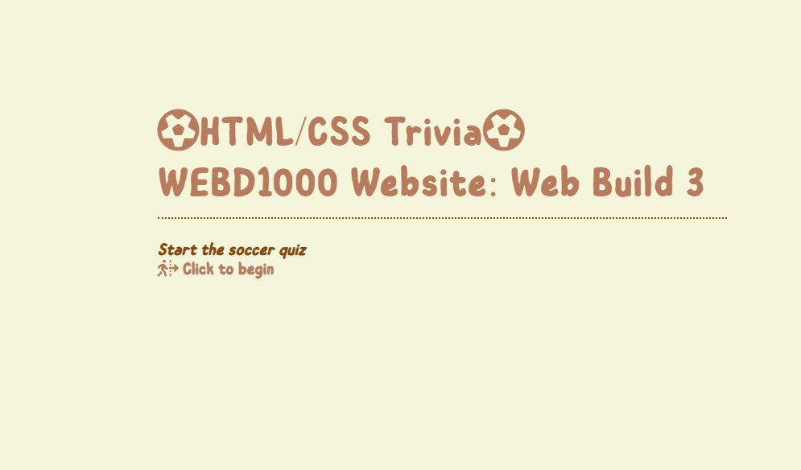
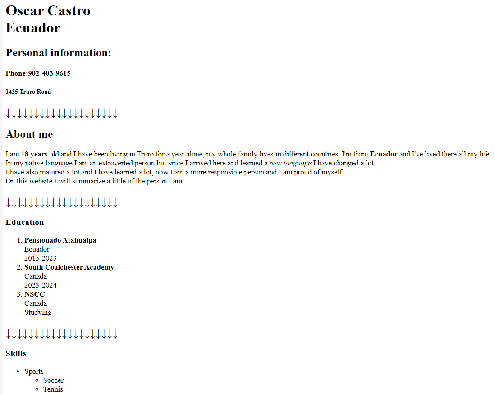
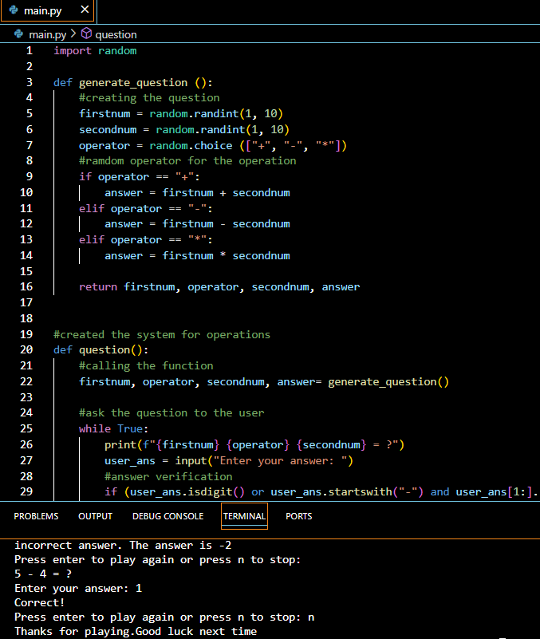
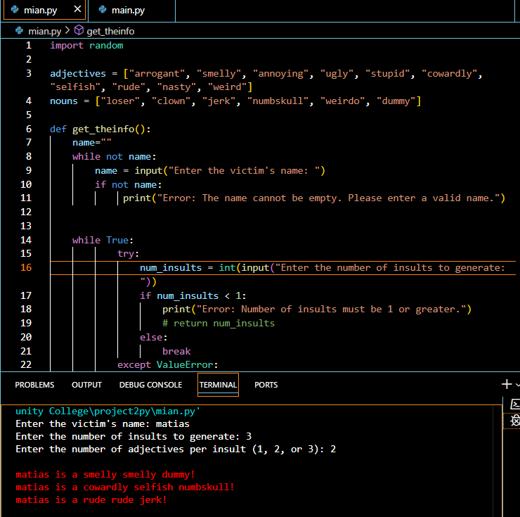
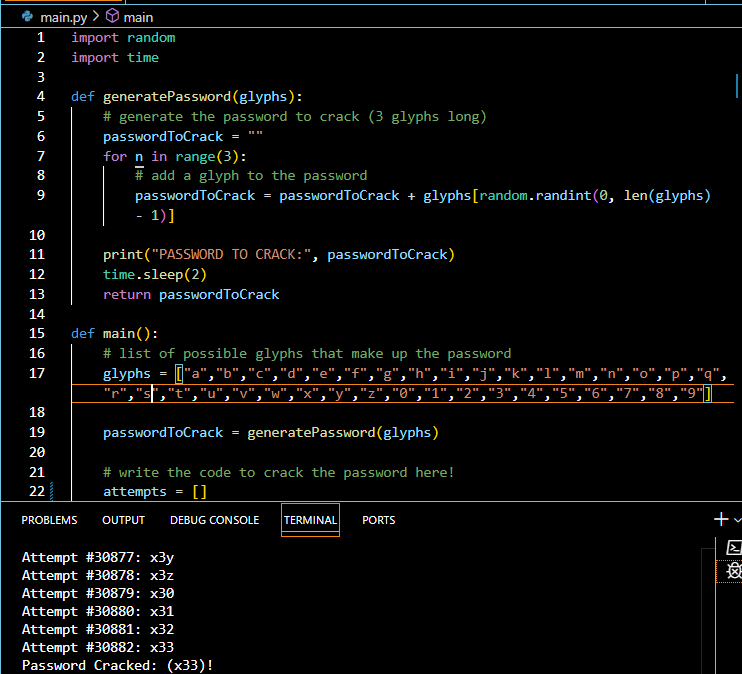
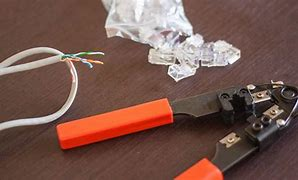

TThis questionnaire project was project 2 where for the first time we used CSS to give it a good design and make it possible to navigate, it was a very simple and interesting job because I learned a lot. Here we put the borders of dots, images and also the logos to give it a good atmosphere and make it look good.
In this project we only used HTML and the project was based on the fact that we had to make a website about ourselves as if it were a CV and then come back in the future and give it more life with CSS and that's what we did on the website you're reading right now.
This was my first Python project where we imported the random library to be able to work on the code, because we had to do like a quiz with random mathematical operations and also ask if the user wanted to play again or not. This was a good project because we applied a lot of things we learned from the first few months here.
This is another python project where we made an insult generator where we used the random library again and used something new which is lists. Using lists in that project was very useful to achieve the objective of the project, I also added a question to the user if he wants to play again or not, also how many insults he wants in a sentence and how many sentences he wanted with the name.
This challenge I made a cracker password where we used the random and time libraries, in this code most of us did something peculiar and that was to use a loop for 3 times so that I could guess each digit of the password and I also made a list with all the alphabet. When I checked the code sometimes it took a long time to figure out the password and other times it was fast
In this laboratory activity in Networking we learned how to build an internet cable and have it work correctly. We used two tools to achieve the goal: a wire stripper, electrician's scissors. At first it was complicated because we had to sort by colors and manage to put them in a super small place and if it was wrong to cut again and try again.
